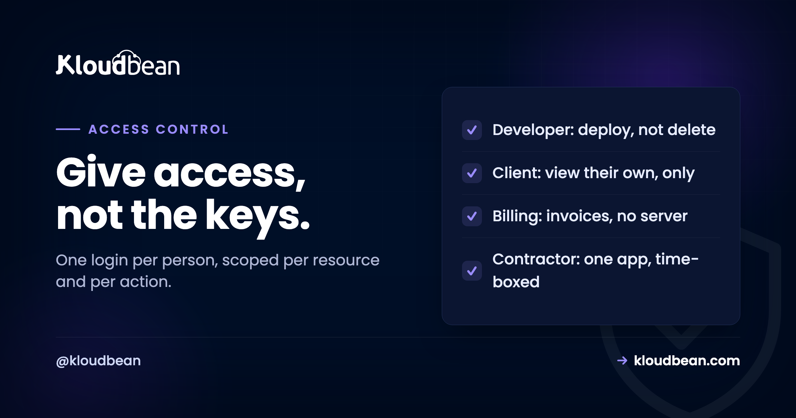

Subusers and UAC: Give Access Without Giving Away the Keys

Most agencies run for longer than they should on a single login that everyone shares. The founder, two developers, a contractor from last spring, and in the worst cases the client, all using the same email and password. It works right up until it doesn't: someone leaves, a password ends up in a Slack message, or a client clicks the wrong button and takes down a site that is not theirs. Subusers and user access control fix this, and the fix is less about locking things down than about being able to answer two questions at any moment: who can touch what, and how fast can I revoke it.
A subuser is a separate login under your account with its own credentials, so nobody shares a password. User Access Control (UAC) is what decides what that subuser can actually do, and the key idea is that permission is two-dimensional: it is granted per-resource (which app, which database, which bucket) and per-action (view, deploy, restart, delete, manage billing) at the same time. So instead of one master password that can do everything, each person gets exactly the cells in that grid they need. For an agency, that means a client can watch their own site without being able to break it, a contractor can deploy one app and nothing else, and offboarding someone is one switch rather than a company-wide password reset.
The shared login is a silent liability
Start with why this matters, because the cost of the shared password is invisible until the day it isn't.
When everyone uses one login, three things are quietly true. You cannot tell who did what, because every action was taken by the same account, so when a site goes down at 3pm there is no way to know whose change caused it. You cannot revoke one person, because the only credential is the shared one, so removing a contractor means changing the password and re-distributing it to everyone who is still meant to have it. And your blast radius is the whole account: a phished password, or a client who was given access "just to see the analytics", can reach every other client you host.
None of that shows up on a normal day. It shows up on the worst day, which is exactly when you cannot afford to be working out who has the keys. Subusers and UAC exist to make the worst day boring.
A subuser is a real, separate identity
The first move is simply that everyone gets their own login. A subuser is an account under your account: its own email, its own credentials, its own session. Nobody shares.
That alone buys you two things before you have configured a single permission. Actions are now attributable, because each subuser acts as themselves. And removing someone is a matter of disabling one identity, not resetting a secret that half the company knows. Everything after this is about narrowing what each of those identities is allowed to do.
Permission is a grid, not a switch
Here is the idea that most access guides skip, and it is the whole reason UAC is more than an on-off toggle.
Access is not one dimension. It is two. On one axis are the resources you own: individual applications, managed databases, object-storage buckets, servers. On the other axis are the actions you can take on each: view it, deploy to it, restart it, edit its configuration, delete it, manage its billing. A permission is a single cell where a resource meets an action. "Give the contractor access" is not a meaningful instruction until you say access to which resource and to do what.
| Action ↓ / Resource → | Client A's app | Client A's database | Client B's app | Billing |
|---|---|---|---|---|
| View / read logs | ✓ | ✓ | — | — |
| Deploy | ✓ | — | — | — |
| Restart | ✓ | — | — | — |
| Delete | — | — | — | — |
| Manage billing | — | — | — | — |
That column-and-row example is a single contractor who works on one client. They can see and deploy Client A's app, read its database and logs to debug, and touch nothing else. They cannot delete anything, cannot see Client B at all, and cannot reach billing. Granular UAC is exactly the ability to describe that person precisely instead of handing them a master key and hoping.
Four role recipes an agency actually needs
You do not design permissions per person from scratch every time. You design a handful of roles that match the real people you add, then assign one. These four cover most agencies.
The developer (your team). Full working access to the client apps they build: view, deploy, restart, read logs and databases, edit runtime configuration. Not billing, and usually not the ability to delete a production resource, which stays with an owner so a mistake needs a second person.
The client. View-only on their own resources and nothing else. They can watch their site, see it is up, maybe read analytics, and cannot see any other client. This is the role that lets you give a nervous client a login without giving them a way to break the thing they are nervous about. Most client-access disasters are a client with more power than they wanted.
The billing contact. Access to invoices and payment, no technical access at all. The finance person at a client, or your own bookkeeper, has no business reaching a production server, and a good access model makes that separation trivial instead of awkward.
The short-term contractor. Scoped to exactly the one or two resources of the one engagement, time-boxed in your own calendar so you remember to remove them. This is the role most often left in place for months after the work ended, which is the single most common stale-access problem in agencies.
| Role | Sees | Can do | Never |
|---|---|---|---|
| Developer | Assigned client apps and databases | Deploy, restart, config, read logs | Billing; delete production |
| Client | Only their own resources | View, read analytics | See other clients; change anything |
| Billing contact | Invoices and payment | Pay, download invoices | Any technical access |
| Contractor | One engagement's resources | Deploy that one app | Everything else; and remove on end date |
Sign-in, and keeping the session honest
Two smaller things that sit alongside UAC and matter more than they look.
Let people sign in with an identity they already secure. Social login with Google, GitHub, or LinkedIn means a subuser signs in through an account they already protect, rather than inventing yet another password to leak. It also means that if your developer already has two-factor authentication on their Google or GitHub account, that protection carries into their access here, without you having to administer it. Fewer passwords in existence is fewer passwords to lose.
Sessions are hardened by default. Session cookies are HttpOnly, which means a script running in the browser cannot read them, closing the most common route by which a session token gets stolen through a cross-site scripting flaw. You do not configure this; it is simply how sessions work. It matters most in exactly the multi-tenant agency setting this article is about, where one compromised session should never become a way into everyone else's resources.
The revocation drill
Here is the test that tells you whether your access model is real. Not "can I grant access", everyone can grant access. The test is: a contractor's engagement ended this morning, or a laptop was stolen at lunch. How long until they can touch nothing?
With a shared login, the honest answer is "after I change the password and tell everyone else the new one", which in practice means hours and a lot of interruption, and often it simply does not happen. With subusers it is one action: disable that identity, and every cell they held goes dark at once, while nobody else is disturbed. That difference, measured in seconds against hours, is the entire return on setting this up.
So run the drill occasionally. Pick a subuser and time how long it takes you to fully revoke them. If the answer is not "seconds", your access is still more shared than you think, and the difference between reseller hosting and managed cloud is largely this: whether scoped, revocable access exists at all.
Where this fits, honestly
Access control is not a feature you bolt on at the end, it is the thing that makes everything else in an agency operation safe: onboarding a client, handing one off, letting a contractor in for a fortnight. So it belongs early, not after an incident.
On Kloudbean, subusers and UAC give you the per-resource, per-action grid this article describes, from one account that holds every client rather than a pile of separate logins. Social login and HttpOnly sessions come as part of that. It sits inside the wider agency model in the agency playbook, alongside walling clients off from each other on one server hosting many apps.
The honest boundary: the platform gives you the access model and the tools. Designing sensible roles, remembering to revoke the contractor, and deciding who on a client's side gets a login are yours, because only you know your engagements. A good model makes the right thing easy; it cannot make the decision for you.
Related reading
This is one part of running a client fleet. The whole operation is in the hosting for agencies playbook, and the scale version is how agencies host 20 client apps on one server. For why scoped access is a managed-cloud property rather than a reseller one, reseller hosting versus managed cloud. On keeping clients isolated at the server level, hosting multiple apps on one server, and for branding the experience for clients, white-label hosting. Secrets deserve the same care as access: environment variables done right.
Give everyone their own key, cut to size.
Manage every client from one account with subusers and per-resource, per-action access control, social login, and hardened sessions, across seven clouds with free SSL and automatic backups. Free migration assistance if you're consolidating a fleet. Start at kloudbean.com or see pricing.
Subusers · Per-resource UAC · Social login · Hardened sessions · One account · Free SSL
FAQ
What is the difference between a subuser and user access control?
A subuser is a separate login under your account, with its own credentials, so people stop sharing one password. User access control, or UAC, is the set of rules that decides what that subuser can actually do. You need both: the subuser gives someone their own identity, and UAC scopes that identity to only the resources and actions they should have.
How do I give a client access without letting them break their site?
Give them a subuser with a view-only role scoped to their own resources. They can watch their site, confirm it is up, and read whatever analytics you allow, while being unable to deploy, restart, delete, or change configuration, and unable to see any other client. That is exactly what per-resource, per-action permissions are for.
What does per-resource, per-action permission actually mean?
It means access is a grid rather than a single switch. One axis is your resources (each app, database, or bucket) and the other is the actions on them (view, deploy, restart, edit, delete, manage billing). A permission is one cell where a resource meets an action, so you can grant "deploy this one app" without granting "delete this database" or "see that other client".
Can I add a developer or contractor without giving them the root account?
Yes, and you should. Create a subuser for them scoped to only the resources of the work they are doing, with only the actions they need, such as deploy and restart on one app. They never touch the owner account, they cannot reach other clients, and when the engagement ends you disable that one identity rather than resetting a shared password.
How quickly can I revoke someone's access?
With separate subusers it is a single action: disable that identity and every permission it held is gone at once, without disturbing anyone else. That is the whole advantage over a shared login, where revoking one person means changing the password and redistributing it to everyone who should still have access. Run a revocation drill occasionally to confirm it really is seconds, not hours.
Do subusers have to create another password?
Not necessarily. Social login lets a subuser sign in with an existing Google, GitHub, or LinkedIn account, so there is no new password to leak, and any two-factor protection they already have on that account carries through. Fewer passwords in existence is simply fewer to lose.
Can I see who did what across my team?
Separate identities make actions attributable, so you can at least tell which person acted rather than "the shared account". For a formal, tamper-proof record, the Audit Trail on enterprise engagements provides an immutable, searchable, account-wide log of every action with CSV export, which is what a compliance review expects to see.
Is this only useful for agencies?
Agencies feel it most because they juggle clients and contractors, but any team benefits. The moment more than one person can touch your hosting, a shared login becomes a liability, and giving each person a scoped subuser is the fix whether you are an agency, a small company, or a solo founder who occasionally brings in help.